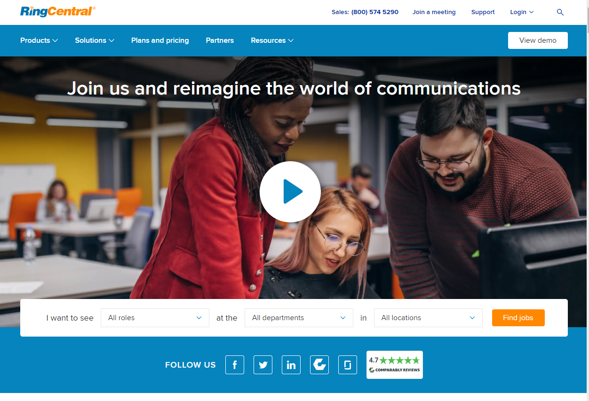
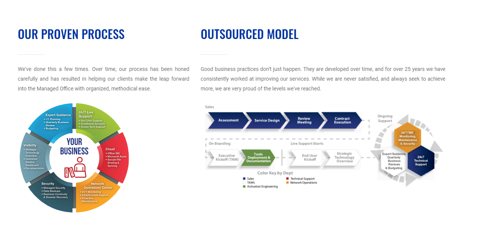
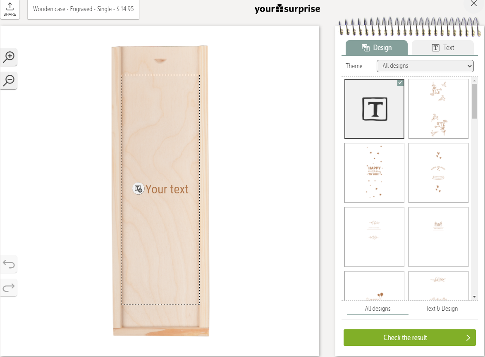

ICT organisations
Types of ICT organisations
There is a huge amount of variety in organisations and businesses. I made the list a bit smaller and narrowed it down to 5 types of organisations.VoIP RingCentral
 For VoIP (Voice over Internet Protocol) I came across a company called RingCentral. It is a pretty popular company withing the VoIP branche. They offer a product in form of a service. A platform for businesses made to enhance communication and they offer customer support with their products. The company has alot of different roles to fulfill as it is a pretty big company. They have a side of customer success which exists out of managers, a side of finance and accounting which exists of analysts, revenue managers, finance managers and more. They have a side of Global Technical Support with engineers, specialists, account managers and representatives. A side of Information Technology (IT) with jobs like Cloud infrastructure Engineer, Data Center Engineer, Application Security Engineers and more. They also have an innovation side with designers, engineers, managers, scrum masters, and testers. When I took a look at their site you notice alot of blue and orange aswell as in the workspace as seen in the picture. In their careers page you can read that they invest in a dymanic and diverse company culture which after researching means alot and is for every company different. But the main aspects I can take from RingCentral's culture is that they give space to their employees to work from everywhere by using portable devices like tablets or laptops. I came across a video on their site where the employees talk about their company culture.Software support RealDefense
I noticed a program named MyCleanPC and it is a software made by RealDefense LLC this is a company that makes tools that help customers with problems. Or quality of life improvements. They provide software that cleans up your pc or installs drivers. They are located in the USA, Santa Monica. They don't seem to have a proper company culture, or atleast exposed because there is not much to see on their website in regards of their culture. As I stated they have a company in Santa Monica, so they probably have a workspace. There is no information regards the look of the companies workspace. So I did a little research and noticed that it isn't really a company building but more of a house. So they probably don't even have a proper culture. Based on the picture it is a small business and it is founded in 2017. Further there is no information of the roles the company has and what work the employees have if they have employees.Data storage NetApp
When I was looking for datastorage companies I noticed IBM, Microsoft Azure and Aamazon AWS. I wasn't looking for these companies. I tried to look a bit further and came across NetApp. It was founded as a data storage company and now uses cloud storage too. It manages it's cloud and data storage and can protect, analyze and monitor it's data for the consumer. As it is a pretty big company it fields alot of different kinds of roles. They have Sales, IT, Hardware Engineering, Human recources and training / university. The latter one is kinda special and not seen by alot of companies. They have their own training program / university where they guide upcoming talents into the profession and the functions of the people that work in that area is supporting the students and partners but also looking for business opportunities. They stated on their website that they are bold. That they make their own rules and look at challenges with fresh eyes. In their website they have a career page with the exact same text in their culture. They stated that customers think they are pushing the limits beyond and above what they thought was possible. Out of these statements I conclude that they are a company that thrives for succes and tries to push their limits. I can respect that. They also stated that they are expansive and inclusive. Which confirms my conclusion. They want to become bigger and their culture is based around that motivation. On further note you can see they are aggressive by directly stating that you box yourself in by using another companies cloud service.Managed IT Service NovaTech
. Managed IT Service is something that alot of businessess can use who are not affiliated with alot of technology. A company that provides this kind of service is Novatech Novatech help businesses with technology and provide equipment and experts to help these businesses with the technology. They provide more services like cloud, print and security services. Novatech manages the technology of companies and provide assistance to the employees. So as you've read there are a couple of areas that they specialize in. The main roles they have is therefore software engineering, hardware engineering, workfloor specialists, sales people and executives. Their culture is based around their people. They make sure they have people that are career-focused and work hard. They try to give their people an incredible experience and make sure they are motivated for their tasks.Network setup Flukenetworks
Something that can be related to Managed IT Service is a setup company. Flukenetworks is the worldwide leader in certification, troubleshooting, and installation tools for professionals who install and maintain critical network cabling infrastructure. From installing the most advanced data centers to restoring telephone services. They have over 700 employees worldwide and provide service in more than 120 countries. It wouldn't be normal for them to have alot of roles to fulfill. They have Science and Engineering, sales, marketing & service, finance and legal, corporate and operations. Operations is what interests me the most in this one because it is different from the rest. They go to a clients place and repair, check and improve the technologies and implement the knowledge of their job. The operations role can be split into 4 different roles: Control System Engineers, Architects, Consultants and Designers, Network Cabling Contractors & Installers and Network Engineers. Their culture is focused on growth both individual and as a team they want to bring out the best in each other and try to learn from the brighest minded people they know. They care about their clients and do their best for them. They share the same culture as Fortive.Comparing
By comparing the differences in culture I can split it up between 2 types, a more agressive and a more people focused culture. RingCentral has for sure a more people focused culture by giving them enough space to do whats best for them instead of pushing for progress. Unlike NetApp who is more focused on their clients, reputation and being expansive. For me I would like to be part of a company that is focused on their clients, reputation and being expansive like NetApp because it can really widen your network and possibly pay more if you do your work better. Competitiveness is something I want because it keeps you fresh and needs you to take the best out of yourself to beat competition. And although working at a "inclusive and oh so friendly culture" sounds nice. In the end I will work for something like a house or maybe later on a family than working because the workspace is so nice.Company safari
Your Surprise
 Your Surprise is a company that makes personalized gifts for people. The people can personalize their gift by using the gift editor. In this case you can choose what to engrave in a wooden case.least valued
The career anchor that I least value is norms and values (standards). I kinda disagree with this one. If people ask something for me and I agree to do it then I will do it. Sometimes I say I won't do something if someone asks me to but that is most of the time because eith+er the question is something the person can do by themself or isn't worth my time. But as an act of kindness I will do most of the things people ask me to do. Things like waiting for someone to go down the stairs first instead of meeting them halfway the stairs and having to let the other pass in a narrow place is normal to do. If someone is christian and follows christian norms and values, I may not agree with them but I won't tell them that their norms and values are bad and that they should stop with that.Conclusion
Recourselist